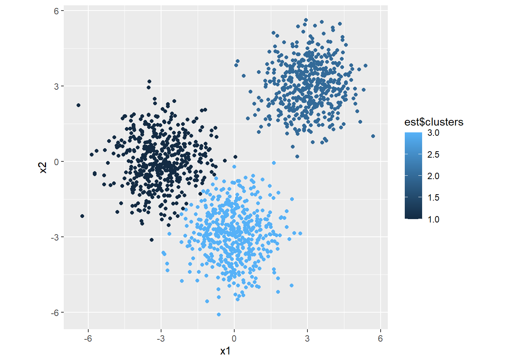

K-Means Clustering
Implementation
kmeans <- function(X, K, tol=0.0001, maxit=1000) {
# X dimensions
N <- nrow(X)
J <- ncol(X)
# Distance to centroid function
cdist <- function(x, c, k) {
rowSums(t(t(x) - c[k,])^2)
}
# Vector of cluster memberships
s <- numeric(N)
# Distances to each centroid
d <- matrix(0, nrow=N, ncol=K)
# Kmeans++ initialisation
C <- matrix(0, nrow=K, ncol=J) #centroids on rows, variables on columns
C[1,] <- X[sample(1:N, 1),]
for (k in 2:K) {
d[,k-1] <- cdist(X, C, k-1) #compute distances to previously initialised centroid
if (k == 2) w <- d[,1] / sum(d,1)
if (k > 2) {
w <- apply(d[,1:(k-1)], 1, min)
w <- w/sum(w)
}
C[k,] <- X[sample(1:N, 1, prob=w),]
}
# Loop
diff <- Inf
it <- 0
while (diff > tol & it < maxit) {
# Membership step
for (k in 1:K) {
d[,k] <- cdist(X, C, k)
}
s <- apply(d, 1, which.min)
# Centroid mean step
old <- C
for (k in 1:K) {
C[k,] <- apply(X[s == k,], 2, mean)
}
# Checks
it <- it + 1
diff <- max(abs(C - old))
}
# Output
return(list(iterations = it,
centroids = C,
clusters = s))
}Testing the function:
# Simulate draws from 3 distributions
set.seed(1234)
n <- 500
x1 <- c(rnorm(n, -3, 1), rnorm(n, 0, 1), rnorm(n, 3, 1))
x2 <- c(rnorm(n, 0, 1), rnorm(n, -3, 1), rnorm(n, 3, 1))
# Combine into matrix
m <- matrix(c(x1, x2), nrow=n*3, ncol=2)
# Estimate clusters
est <- kmeans(m, 3)
# Plot
library(ggplot2)
ggplot(mapping=aes(x=x1, y=x2, color=est$clusters)) +
geom_point() +
theme(aspect.ratio = 1)